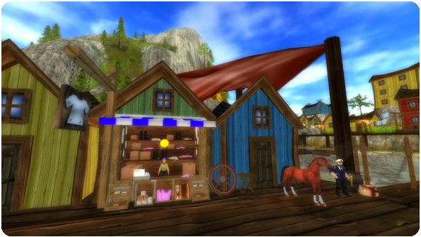
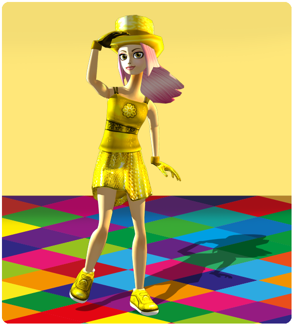

Hello!
This is what's new in this week's update:
New cool clothes:
A new clothes shop has opened on the long deck between Cape West Fishing Village and the Golden Leaf Stable! This shop includes new cool clothes for you.

Disco Night Star Coins:
This Friday Night we are hoping to have a special Star Rider Disco Night! So we are adding an extra 250 Star Coins for all our Star Riders to make sure everyone gets a chance to buy something special for the event! We'll be there to take pictures for the Facebook page and to hand out some special prizes!

High score reset:
It's time for a reset of the high score results! Now everyone has got the chance to take new high scores again.
Fixes:
Stable chat and the Say chat is fixed so it works properly.
Stable chat is a global chat. Stable chat is available in most villages and stables around Jorvik. Everyone can now see the chat, no matter what village or stable they are at.
Say chat is local. Only those who are close to you can see the chat.
Best regards: